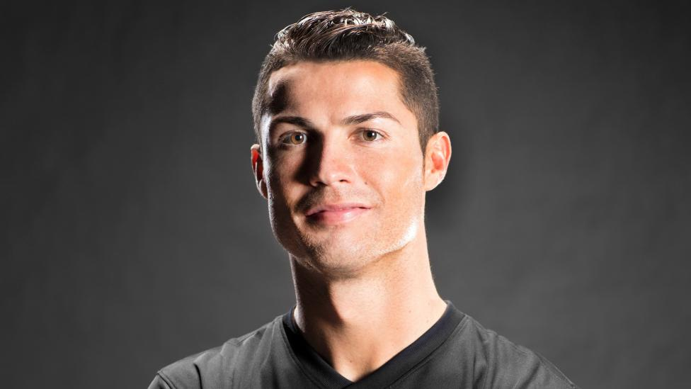
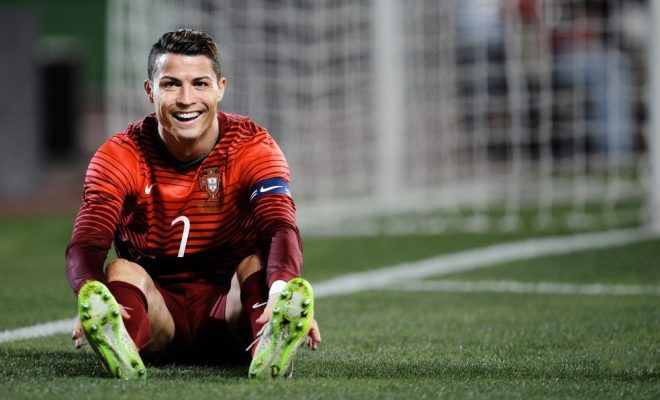
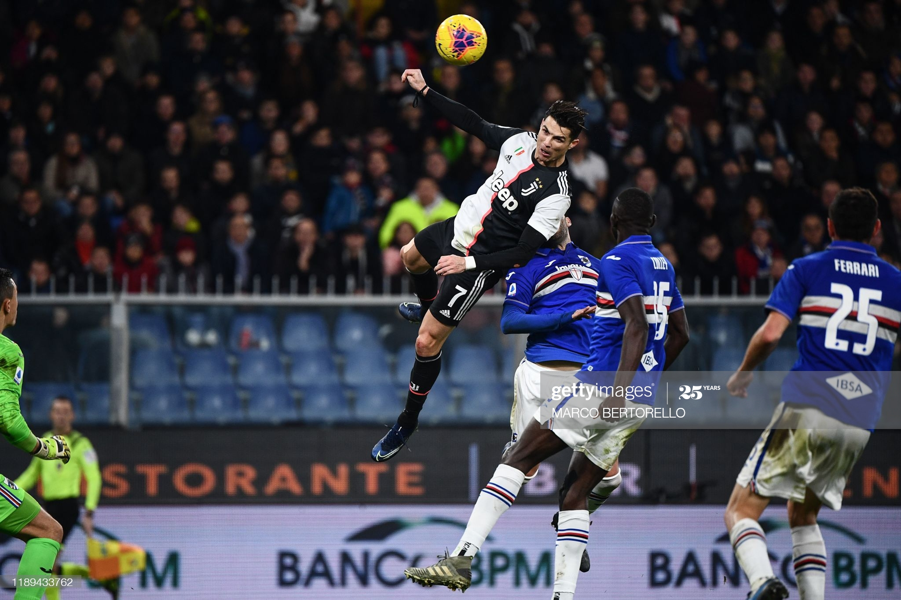

-

Kehidupan awal
Kehidupan awal Ronaldo lahir di Madeira, Portugal, anak dari Maria Dolores dos Santos Aveiro dan José Dinis Aveiro. Dia memiliki kakak laki-laki bernama Hugo, dan dua kakak perempuan, Elma dan Liliana Cátia. Liliana Bekerja sebagai penyanyi dengan nama panggung "Ronalda" di Portugal.[butuh rujukan] Diberi nama keduanya "Ronaldo" dipilih dari mantan Presiden AS Ronald Reagan, yang jadi aktor favorit ayahnya.[3] Nenek buyutnya Isabel da Piedade berasal dari Cape Verde.[4] Keluarganya penganut Katolik taat dan hidup dalam kemiskinan, Ronaldo tidak punya mainan dan berbagi kamar dengan saudara-saudaranya. Pada usia 14, Ronaldo setuju dengan ibunya untuk fokus sepenuhnya pada sepak bola.
karier
Karier Junior Cristiano bergabung dengan Andorinha (1993—1995), Nacional (1995—1997), dan Sporting Lisboa (1997—2001) pada masa junior. Klub Sporting Lisboa Cristiano pernah bermain untuk Sporting Lisboa pada 2001—2003 dengan nomor punggung 28. Ia bermain 25 kali dan mencetak 3 gol. Pada pertengahan musim panas 2003, Sporting Lisboa mengadakan pertandingan persahabatan melawan Manchester United dengan skor akhir Sporting 3-1 M.U., sebuah kekalahan yang mengejutkan bagi sebuah klub raksasa Inggris sekaliber Manchester United. Lebih jauh lagi kemenangan ini semua didalangi oleh permainan cemerlang dari Cristiano Ronaldo muda dari Sporting, membuat para pemain Manchester United mendesak Sir Alex Ferguson, pelatih mereka, untuk segera merekrut pemain muda brilian tersebut. Manchester United Dari apa yang terjadi sejak pertandingan persahabatan itu, Ronaldo pun didatangkan ke Manchester United. Sebelum ia bermain untuk klub itu, Sir Alex Ferguson bertanya pada Ronaldo angka berapa nomor punggung yang diharapkannya. Cristiano Ronaldo menjawab 28, karena itu adalah nomor favoritnya. Namun Sir Alex Ferguson malah berkata tidak, mulai sekarang nomor punggungnya adalah 7. Di Manchester United, penyandang nomor punggung 7 secara turun temurun adalah pemain legendaris yang membawa Manchester United ke puncak kejayaannya, dan Sir Alex Ferguson memberikan nomor punggung keramat itu sebagai wujud penghargaannya kepada talenta brilian yang dimilikinya. Ia bermain 196 kali dan mencetak 84 gol. Real Madrid Pada 1 Juli 2009, ia pindah ke Real Madrid, klubnya saat ini, dengan memecahkan rekor transfer sebesar 80 juta poundsterling atau sekitar Rp 1,3 Triliun, yang menjadikannya sebagai pemain termahal dalam sejarah sepak bola kala itu. Ia telah bermain 81 kali dan mencetak 87 gol untuk Real Madrid. Pada musim La Liga 2010/2011, Ronaldo mencatatkan dirinya sebagai pencetak gol terbanyak di La Liga dalam 1 musim, sejumlah 40 gol.[5] Dia pun telah mencetak 15 Gol di El Clasico, dia pun menjadi pencetak Gol terbanyak UCL dalam 1 musim (2013-14) dengan torehan 17 Gol, hattrick v Galatasaray (1-6), 2 Gol v Copenhagen (4-0), 2 Gol v Juventus (2-1), 1 Gol v Juventus (2-2), 1 Gol v Copenhagen (2-0), 2 Gol v Schalke (1-6) dan 2 Gol v Schalke (3-1), 1 Gol v Dortmund (3-0), 2 Gol v Bayern Munchen (0-4) dan turut menyumbang 1 Gol di Final UCL 2014 di Lisbon usai elibas Atletico Madrid 4-1 melalui titik penalti di menit 120' usai dia dijatuhkan Godin di kotak penalti. Di musim 2015-2016, ia menjadi penentu kemenangan Real Madrid di FINAL UCL 2016 melawan Atletico Madrid lewat babak adu penalti usai skor berakhir 1-1 dan telah melalui Extra Time. Dengan skor 5-3 di adu penalti, Real Madrid menjuarai UCL 2016. Juventus Pada 11 Juli 2018, Ronaldo pindah ke klub Italia, Juventus dengan nilai transfer sebesar 112 juta Euro (99,2 Poundsterling), atau setara dengan Rp 1,88 Triliun.
Internasional
Ronaldo bersama Lionel Messi, Februari 2011 Cristiano telah bermain untuk berbagai tingkatan usia tim nasional Portugal, yaitu U-17, U-20, U-21, dan U-23. Ia mulai dipanggil ke tim nasional Portugal sejak tahun 2003. Ia telah bermain setidaknya 118 kali untuk tim nasional senior, dan mencetak 52 gol. Ia termasuk dalam skuat Portugal pada Piala Eropa 2004, Olimpiade Athena 2004, Piala Dunia 2006, Piala Eropa 2008, dan Piala Dunia 2010,dan Piala Eropa 2012. Pada tanggal 17 Oktober 2012, Ronaldo mencapai caps ke-100 untuk tim nasional Portugal di kualifikasi Piala Dunia melawan Irlandia Utara di Porto Estádio do Dragão. Ia menjadi pemain termuda ketiga Eropa yang pernah mencapai angka tersebut, setelah pemain Jerman Lukas Podolski dan pemain Estonia Kristen Viikmäe.[6] Ronaldo mencetak delapan gol selama kualifikasi Piala Dunia FIFA 2014 Portugal, termasuk empat gol dalam dua play-off melawan Swedia yang memastikan tempat Portugal di Piala Dunia 2014.[7] Hattrick-nya di leg kedua membuatnya menjadi pemain Portugal yang mencetak gol terbanyak sepanjang masa setelah menyamai rekor penghitungan Pauleta ketika 47 gol internasional dikoleksi Pauleta.[8] Pada ajang Final Piala Eropa 2016,Ronaldo gagal meneruskan perjuangannya saat bertarung melawan tuan rumah Prancis akibat cedera yang menimpanya pada babak pertama.Meskipun itu,akan tetapi perjuangan Portugal terus berjalan hingga menang 1-0 dari tuan rumah Prancis.
Gaya Bermain
Secara luas dianggap sebagai salah satu dari dua pemain terbaik di dunia dan sebagai salah satu pemain terbaik yang pernah bermain,[9][10] Cristiano Ronaldo memainkan peran menyerang, paling sering bermain baik sebagai striker atau sebagai pemain sayap,[11][12] dan dikenal karena finishing, kecepatan, dribbling, positioning, passing dan kemampuan crossing.[13][14] Dia mampu bermain di kedua sayap juga ditengah, membuatnya menjadi penyerang yang sangat serbaguna.[15] Taktis, Ronaldo memainkan peran menyerang yang kuat, sering melayang dari sayap kiri ke pusat ketika bergerak menyambut bola.[16] Ronaldo dikenal tajam secara mental, dengan visi yang baik, memprediksi drama tertentu, dan juga memiliki reaksi yang sangat baik, keseimbangan dan kelincahan. Meskipun menggunakan kaki kanan, ia juga mampu mengendalikan bola serta crossing dan menyelesaikan dengan baik dengan kaki kirinya.[17][18] Cristiano Ronaldo dikenal karena kecepatan, keterampilan, kontrol dan kemampuan dribblingnya, serta bakat dalam mengalahkan pemain dalam situasi berhadapan satu-satu. Dia mampu menyelesaikan dengan baik, baik dalam daerah untuk mencetak gol maupun dari jarak jauh.[13][19] Ia juga merupakan spesialis tendangan bebas yang akurat.[20] Uniknya, tinggi badan, kekuatan, kemampuan dan teknik melompat telah memberinya keunggulan lebih dalam memenangkan duel udara, dengan mayoritas dia sering ditargetkan menjadi penyundul bola.[21] Sejak kedatangannya di Manchester United, Ronaldo mengalami transformasi tubuh yang signifikan, dari seorang pemuda kurus dibentuk untuk ukuran orang dewasa yang atletis. Tegap, tipe tubuh berotot memungkinkan dia untuk menjaga keseimbangan ketika membawa bola.[22] Pelatih kekuatan dan kondisi pemain Manchester United, Mike Clegg dan legenda Prancis Zinedine Zidane memuji etos kerja yang luar biasa dari Ronaldo, dan dedikasi untuk perbaikan pada saat di lapangan latihan dan telah menyatakan bahwa ia telah terkenal karena hal ini.[23][24][25] Ronaldo pernah menyatakan keinginannya untuk mengukir namanya dalam sejarah bersama legenda sepak bola seperti Pelé dan Diego Maradona,[26] dan bahwa ia akan lebih dikenang sebagai model peran dari salah satu pemain terbaik sepak bola dunia[27]. Namun dengan bertambahnya usia dan cedera lutut yang menderanya di Piala Dunia 2014 lalu, gaya bermain Ronaldo pun ikut berubah. Mulanya ia dikenal sebagai seorang pemain sayap yang lincah, gemar melewati pemain belakang lawan dan mengeluarkan kemampuannya mengolah bola. Kini Ronaldo, cenderung sebagai seorang penyerang, menunggu di depan gawang, memanfaatkan ruang yang kosong untuk mencetak gol. Bagaimanapun, Ronaldo tetaplah salah satu pencetak gol terbaik di dunia saat ini.[28]. Ronaldo beberapa kali telah dikritik karena beberapa penampilannya di tim nasional, seperti Maradona berkomentar, "Sebaik dia dengan Real Madrid, ia sering tampak frustrasi pada tingkat nasional, seolah-olah ia dikelilingi oleh pemain yang berbuat banyak untuk membantunya. "Ronaldo juga telah dikritik karena diving ketika ditackling. Untuk yang José Mourinho mengatakan, "Cristiano adalah pemain yang tidak memiliki budaya diving, ia tidak memiliki budaya simulasi, ia adalah pemain Inggris yang terlatih, Ferguson yang melatih. Dalam beberapa kasus, orang yang berpura-pura diberi perlindungan lebih, dan orang-orang yang jujur sering merugi. aku tidak munafik jika saya mengatakan bahwa mereka (pembela) memukul Cristiano sangat keras, dan bahwa kartu kuning tidak tiba atau terlambat datang "[29] Namun, Mourinho menyatakan bahwa Ronaldo tidak menerima kritik dengan baik,[30] tetapi tetap berpendapat teguh bahwa Ronaldo adalah "pemain paling profesional yang pernah kutemui."[31] Ronaldo telah digambarkan memiliki "citra arogan" di lapangan bermain. Dengan Ronaldo menyatakan bahwa ia telah menjadi "korban", karena sebagaimana ia digambarkan oleh media.[32] Dia sering terlihat mengerang, menunjukkan isyarat dan cemberut ketika mencoba untuk menginspirasi timnya untuk meraih kemenangan. Ronaldo telah menegaskan bahwa sifat kompetitifnya tidak boleh di salah arti untuk kesombongan.[32] Mantan pelatih Portugal Luiz Felipe Scolari, yang melatih Ronaldo antara 2003 dan 2008, mengakui bahwa orang-orang yang "cemburu" kepadanya.[33] Rekan senegaranya Pepe menggaris-bawahi Ronaldo dengan "karakter" dan "keinginan untuk menang".[34] Gaya sepak bola langsung, keterampilan dan kemampuan mencetak gol Ronaldo telah menjadi ciri-ciri yang paling mencolok sepanjang kariernya, dan bakatnya secara keseluruhan telah di kali menyebabkan dia dianggap sebagai pemain yang paling menonjol dan dapat menjadi pengubah pertandingan.[35] Kemampuan Ronaldo mengontrol bola. Reputasi meningkat Ronaldo memimpin media untuk menarik perbandingan antara dia dan bintang FC Barcelona Lionel Messi,[36][37][38][39] dan Ronaldo telah mengomentari dan mengatakan, "Beberapa orang mengatakan aku lebih baik, orang lain mengatakan itu dia, tetapi pada akhir hari, mereka akan memutuskan siapa yang adalah pemain terbaik. Ia melakukan hal terbaik untuk Barcelona, saya melakukan hal-hal terbaik bagi Madrid. saya pikir kita mendorong satu sama lain kadang-kadang dalam kompetisi, ini mengapa kompetisi begitu tinggi."[40] Namun, beberapa mantan pemain besar mengkritik perbandingan, seperti legenda Brasil Pelé dan pemain internasional Portugal Luis Figo, yang menyebutkan bahwa mereka memiliki gaya bermain yang berbeda.[41][42] Meskipun perbandingan tersebut telah dikritik, banyak tokoh di dunia sepak bola telah menyebutkan Lionel Messi dan Cristiano Ronaldo sebagai pemain terbaik di dunia.[43][44][45][46] Mantan bintang Brasil Roberto Carlos menyarankan bahwa "...Ronaldo dapat melakukan lebih untuk Madrid dari yang Messi bisa untuk Barcelona. Madrid benar-benar bergantung pada Ronaldo untuk tampil baik, sedangkan Barcelona yang lebih dari sekadar Messi."[47] Mantan striker Chelsea Didier Drogba bahkan melabeli sebagai duo "monster" untuk merevolusi statistik gol yang dicetak mereka.[48] Mantan manajer Ronaldo dan Real Madrid José Mourinho pernah menyatakan, "Jika keduanya Messi dan Cristiano Ronaldo lahir di era yang berbeda, mereka akan memimpin adegan sepak bola dan masing-masing mengumpulkan 10 FIFA Ballon d' Ors."[49] "Kedewasaan membawa banyak hal. Ketika saya pergi untuk melihat mereka bermain melawan City, beberapa dalam hal passing pengambilan keputusannya adalah brilian. Passing satu sentuhan, crossing yang baik. Dalam enam tahun kami memiliki dia, Anda hanya melihat permainannya yang tumbuh sepanjang waktu, dan ia adalah pemain yang fantastis. Sekarang Anda melihat pemain yang lengkap. Pengambilan keputusan, kedewasaannya, pengalamannya, ditambah semua keterampilan yang besar yang dia miliki, semua membuat dia menjadi pemain yang lengkap."[50] Jelas Alex Ferguson, manajer Ronaldo di Manchester United, tahun 2013.
Read More